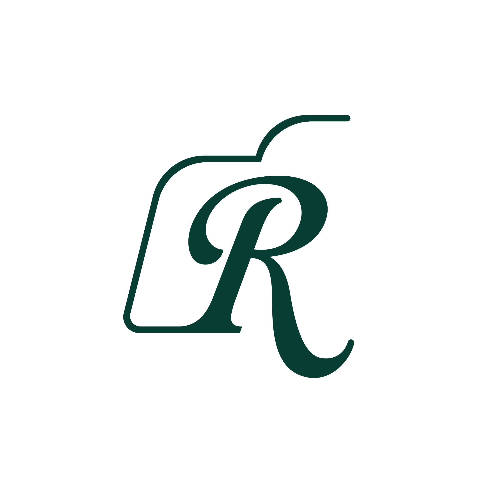

Ruliette
Fotógrafa, Estudiante de marketing digital
Soy Rubí, fotógrafa chilena, me especializo en macrofotografía y fotografía de naturaleza. Mis obras se caracterizan por una mirada sensible y estética que busca capturar la esencia y belleza sutil del entorno natural, mi profunda conexión con la naturaleza me permite encontrar belleza en lo cotidiano y transformar lo orgánico en un trabajo visualmente atractivo
Behance Instagram Pinterest